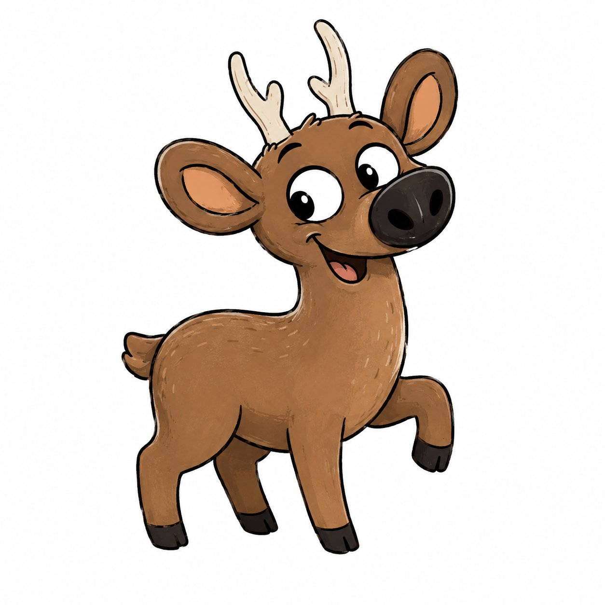
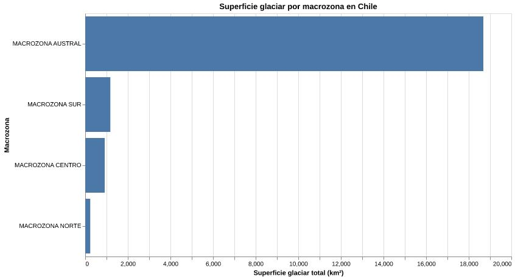

La paradoja del
país del hielo
Chile es uno de los países con más agua congelada del mundo. Sus glaciares representan aproximadamente el 80% de los glaciares de toda Sudamérica, una cifra que suena a abundancia. Pero ese hielo se está derritiendo, y lo está haciendo más rápido de lo que cualquier modelo climático anticipaba hace apenas dos décadas.
Entre 2014 y 2022 —apenas ocho años— Chile perdió cerca del 8% de su superficie glaciar total. En números: la superficie pasó de 22.796 km² a 21.012 km², según el Inventario Público de Glaciares (IPG 2022) de la Dirección General de Aguas. El volumen cayó de 3.278 km³ a 3.026 km³. Casi 250 km³ de hielo que simplemente ya no están.
"El agua que bebemos mañana existe hoy, congelada en la montaña. Y se está yendo."
El problema no es solo ambiental. Es político y social. En Chile, los glaciares no son una postal de montaña: son infraestructura hídrica. En épocas de sequía, cuando no hay nieve ni lluvia, el agua que baja por los ríos viene del deshielo. La Macrozona Centro —la más poblada del país— tiene apenas 911 km² de superficie glaciar. La Macrozona Austral tiene 18.687 km². El hielo está en el sur. La sed, en el centro.
Shoan lo
cuenta todo

Hola. Soy Shoan. Un huemul. Y nací entre glaciares que hoy ya no existen.
En la lengua de quienes habitaron esta tierra antes que todos nosotros, mi nombre significa algo. Y esta historia también.
¿Ven ese número?
−8% de superficie glaciar perdida en 8 añosEn ocho años. Lo que tardó miles de años en formarse, desaparece en menos de una década.
La Macrozona Norte tiene 234 km² de hielo. El Centro, 911 km². El Sur, 1.180 km². La Austral, 18.687 km².
Todo el hielo está al sur. Toda la gente, al norte y al centro. ¿Alguien más ve el problema?
Chile lleva años hablando de una Ley de Glaciares. Años. Y el hielo no espera los debates.
Yo solo quiero que mi hogar siga existiendo.
Superficie glaciar
por macrozona
El gráfico muestra la distribución de superficie glaciar por macrozona en Chile, elaborado a partir de los datos del IPG 2022. La desproporción entre la Macrozona Austral y el resto del país es el dato central de esta historia.

La Macrozona Austral concentra el 89% de la superficie glaciar del país. Pero la crisis hídrica no golpea en la Patagonia: golpea en el centro y el norte, donde los glaciares son más pequeños, más frágiles y más necesarios.
Lo que este
proyecto pregunta
- 1 ¿Cuánto han disminuido los glaciares en Chile en los últimos años?
- 2 ¿Qué zonas del país están más afectadas por el retroceso glaciar?
- 3 ¿Cómo se relaciona el deshielo con la crisis hídrica?
- 4 ¿Qué regiones dependen más del agua glaciar para el consumo humano?
- 5 ¿Qué podría pasar si esta tendencia continúa al ritmo actual?
Fuentes
- Dirección General de Aguas (DGA) — Inventario Público de Glaciares 2022: dga.mop.gob.cl
- Fundación Glaciares Chilenos — Análisis IPG 2022: glaciareschilenos.org
- Portal Agro Chile — Nota oficial DGA: portalagrochile.cl
- Wikipedia — Inventario Público de Glaciares de Chile 2022: es.wikipedia.org